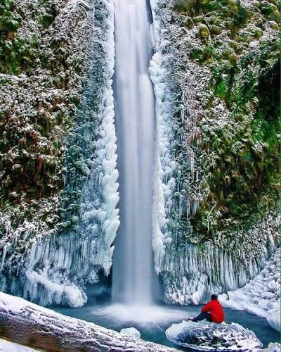
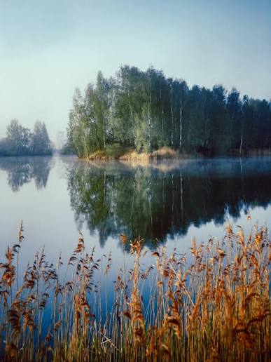

Фотогалерея
Шесть снимков, выложенных адаптивной сеткой: на широком экране они занимают три колонки, на планшете — две, на телефоне — одну. Каждое изображение вставлено тегом img с обязательным атрибутом alt и подписью в figcaption.
Атрибут loading="lazy" откладывает загрузку кадров до прокрутки, а заданные ширина и высота не дают макету «прыгать».


Куда положить файлы: images/photo-1.jpg … images/photo-6.jpg
Пока файлов нет, вместо них показываются аккуратные серые заглушки с подписью.